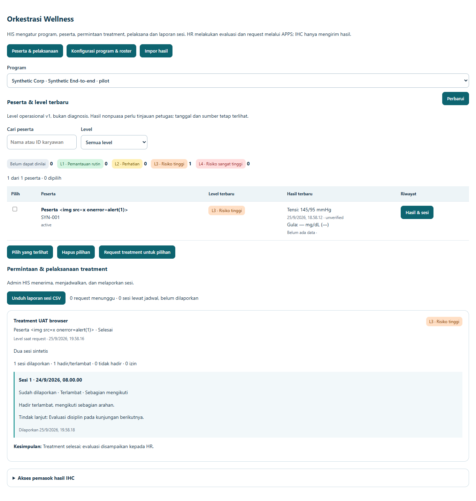
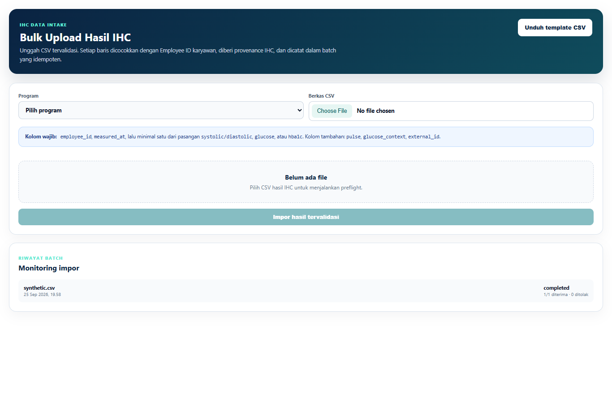
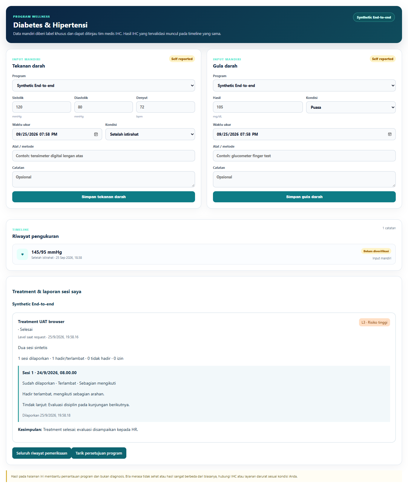
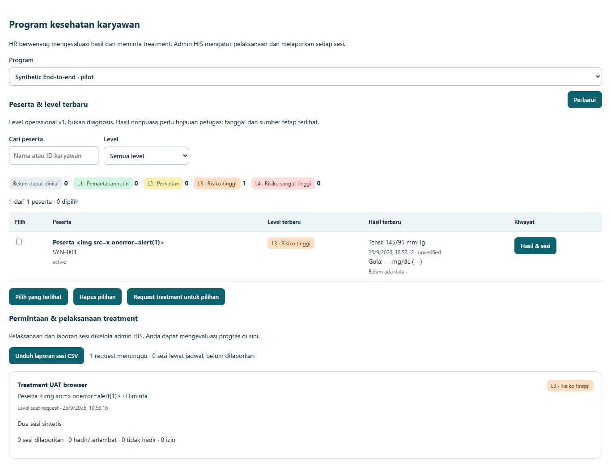
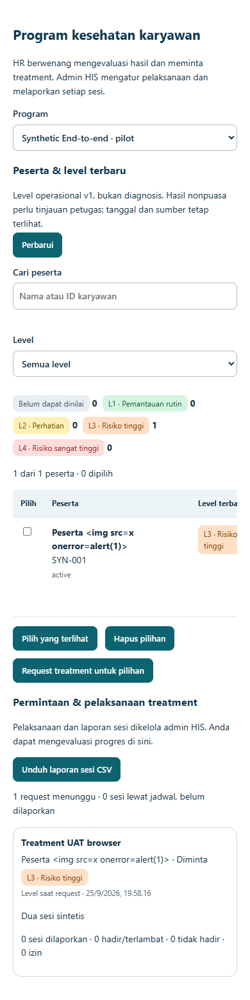

AVA Health · AHM Wellness UAT
Panduan UAT Program Wellness
Versi orkestrasi HIS, 25 September 2026. Panduan ini menggantikan pembagian akses lama yang masih menempatkan Operator IHC sebagai Pengelola dan HR hanya melihat agregat.
ihc dan hanya mengirim hasil pada program yang diberikan dari HIS. HR tetap dapat melihat hasil individual karyawan perusahaannya, riwayat, level operasional, laporan sesi, dan evaluasi kedisiplinan.1. Matriks akun UAT terbaru
| No | Password UAT | Kode perusahaan | Role server | Mode akses | Fungsi utama | Status | |
|---|---|---|---|---|---|---|---|
| 1 | uat.admin@avahealth.sbs | UatPassword123! | — | super_admin | Pengelola / HIS | Membuat program, membuka Pilot, mengimpor roster, reminder, akses IHC, treatment, sesi, dan laporan. | Tetap; orkestrasi wellness di HIS. |
| 2 | uat.ihc@avahealth.sbs | UatPassword123! | — | ihc | APPS · Pemasok hasil | Preflight dan impor batch hasil IHC pada program yang diberi akses. | Berubah Dari super_admin menjadi ihc. |
| 3 | uat.karyawan@avahealth.sbs | UatPassword123! | AHM-WELLNESS-2026 | patient | Personal | Consent, input mandiri, riwayat, jadwal, laporan sesi, dan penarikan consent. | Tetap; notice v2. |
| 4 | uat.hrd@avahealth.sbs | UatPassword123! | AHM-WELLNESS-2026 | corporate | Perusahaan | Hasil terbaru, riwayat, level risiko, request treatment, evaluasi kedisiplinan, dan laporan. | Berubah Dapat melihat hasil individual sesuai corporate. |
AHM-WELLNESS-2026. Gunakan pada akses perusahaan/peserta bila form login memintanya. Akun admin dan IHC masuk melalui jalur pengelola/provider.Kredensial di atas adalah akun sintetis UAT. Jangan gunakan untuk data karyawan nyata dan jangan membagikan password di luar penerima uji yang ditunjuk.
2. Pembagian sistem
HIS — pusat orkestrasi
Program, periode, roster, aturan reminder, akses provider IHC, request treatment, penjadwalan sesi, pelaksana admin, laporan sesi, dan penutupan treatment dikelola di HIS.
APPS — perpanjangan tangan
Perusahaan dan peserta memakai APPS untuk monitoring, persetujuan, input mandiri, permintaan treatment, riwayat, dan evaluasi. IHC hanya memakai jalur pengiriman hasil yang diberikan.
3. Langkah UAT Super Admin / Admin HIS
3.1 Buka Orkestrasi Wellness
- Masuk sebagai akun pengelola.
- Buka domain HIS.
- Pilih Program Kesehatan Korporat → Orkestrasi Wellness.
- Pastikan tiga tab tersedia: Peserta & pelaksanaan, Konfigurasi program & roster, dan Impor hasil.

Workspace HIS menampilkan program, peserta, level terbaru, request treatment, sesi, laporan, dan akses provider.
3.2 Buat program dan roster
- Buka tab konfigurasi.
- Buat program dengan corporate, kode, nama, tanggal, dan status Pilot.
- Impor roster menggunakan
employee_idtetap dan email terverifikasi. - Jalankan sinkronisasi roster.
- Impor ulang file yang sama; pastikan tidak membuat peserta ganda dan jumlah inserted/skipped benar.
Employee ID adalah kunci. Jangan menggantinya dengan NIK otomatis jika Employee ID tersedia.
3.3 Beri akses provider IHC
- Buka panel Akses pemasok hasil IHC.
- Tambahkan user dengan role
ihcdalam tenant yang sama. - Pilih program yang boleh dikirimi hasil.
- Cabut akses setelah pengujian dan pastikan upload berikutnya ditolak.
4. Langkah UAT IHC
4.1 Login sebagai pemasok hasil
- Pilih mode IHC · Pemasok hasil.
- Buka Impor Hasil IHC.
- Pastikan hanya program yang diberi akses yang muncul.
- Pastikan menu pengaturan program, treatment, dan riwayat peserta tidak tersedia.

IHC mengirim hasil dengan provenance, checksum, status batch, dan validasi baris.
4.2 Preflight dan batch
- Unggah CSV valid.
- Pastikan
employee_id, waktu ukur, nilai, konteks, danexternal_iddikenali. - Uji baris Employee ID tidak dikenal, nilai di luar rentang, pasangan tensi tidak lengkap, dan checksum duplikat.
- Pastikan baris invalid ditolak per baris dan batch yang sama tidak menggandakan observasi.
5. Langkah UAT Peserta
5.1 Consent dan input mandiri
- Masuk sebagai peserta.
- Buka Program Wellness Saya.
- Baca notice
wellness-privacy-v2; checkbox harus kosong. - Tanpa consent, pastikan input mandiri ditahan oleh UI dan server.
- Centang dan setujui. Masukkan tekanan darah dan gula darah sintetis.
- Pastikan label sumber self reported / unverified muncul.

Peserta melihat hasil pribadi, jadwal, laporan sesi, kehadiran, kedisiplinan, tindak lanjut, dan kesimpulan treatment.
5.2 Penarikan consent
- Tarik persetujuan dari halaman peserta.
- Pastikan request dan sesi aktif dibatalkan, reminder berhenti, dan request baru ditolak.
- Pastikan riwayat pribadi tetap dapat dibaca dan audit trail tidak dihapus.
6. Langkah UAT HRD
6.1 Monitoring hasil terbaru
- Masuk sebagai HRD.
- Buka Monitoring Wellness.
- Pastikan daftar peserta termuat otomatis.
- Gunakan pencarian nama/Employee ID dan filter level.
- Masukkan dua hasil sintetis pada waktu berbeda, misalnya 170/105 lalu 115/75. Level harus mengikuti hasil terbaru, sedangkan kedua hasil tetap ada di riwayat.
- Gula nonpuasa harus diberi tanda perlu tinjauan; jangan diperlakukan otomatis sebagai gula puasa.

HR melihat hasil individual karyawan dalam corporate sendiri. Level adalah label operasional, bukan diagnosis.
6.2 Request treatment
- Pilih satu atau beberapa peserta yang consent-nya aktif.
- Pilih jenis treatment, label, jadwal usulan, dan catatan.
- Kirim request.
- Pastikan request muncul sebagai Diminta di workspace HIS.
- Kirim ulang payload yang sama; pastikan tidak ada request ganda.

Tampilan mobile menyediakan filter peserta, level terbaru, request treatment, dan ringkasan pelaksanaan tanpa overflow halaman.
6.3 Evaluasi laporan
- Buka Hasil & sesi pada peserta.
- Periksa jadwal, kehadiran: hadir/terlambat/tidak hadir/izin.
- Periksa kedisiplinan: mengikuti/sebagian/tidak mengikuti/belum dinilai.
- Periksa laporan, tindak lanjut, dan kesimpulan.
- Unduh laporan sesi CSV untuk evaluasi internal.
7. Langkah Admin HIS untuk treatment
7.1 Siklus sesi
- Terima request: Diminta → Diterima admin.
- Buat sesi bernomor dan pilih admin pelaksana.
- Ubah jadwal atau batalkan sesi dengan alasan bila diperlukan.
- Setelah sesi berlangsung, isi laporan, kehadiran, kedisiplinan, dan tindak lanjut.
- Buat sesi pengganti jika peserta tidak hadir.
- Selesaikan treatment hanya setelah seluruh sesi terlapor dan simpan kesimpulan.
Contoh treatment selesai: satu sesi dilaporkan, kehadiran dan kedisiplinan terlihat, tindak lanjut serta kesimpulan tersimpan.
8. Kriteria lulus dan catatan rilis
Wajib lulus
Tenant isolation; consent v2; level memakai data terbaru; riwayat tidak hilang; request idempotent; laporan tidak dapat ditimpa; HR/admin/peserta melihat cakupan sesuai peran; IHC hanya dapat upload pada program yang diberikan.
Bukti lokal
46 pemeriksaan PGlite end-to-end, browser Edge untuk HR → HIS → peserta → IHC, screenshot desktop/mobile, dan audit menu/security suite. Semua data pengujian sintetis.
uat.ihc@avahealth.sbs sebagai super_admin. Sebelum UAT berikutnya, ubah profil akun itu menjadi ihc dan beri akses program dari HIS. Jangan menjalankan ulang seed lama setelah migrasi orkestrasi diterapkan.